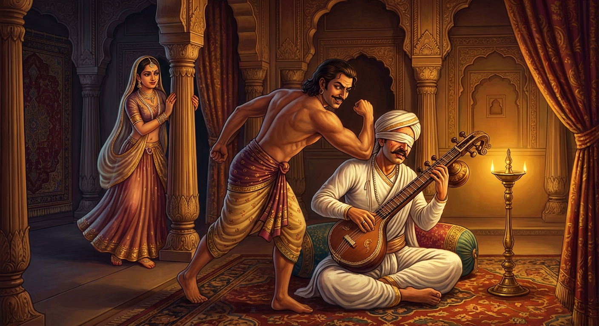

2. අන්ධභූත ජාතකය (62)
“යං බ්රහ්මණො” යන මේ දේශනාව බුදුරජාණන් වහන්සේ දෙව්රම් වෙහෙරෙහි වැඩ වසන සමයෙහි, (ශාසන ජීවිතය ගැන) කළකිරුණු භික්ෂුවක් අරබයා වදාළ සේක. බුදුරජාණන් වහන්සේ එම භික්ෂුවගෙන්, “මහණ, ඔබ උකටලී වූයේ සැබෑදැ?” යි විචාරා, “සැබෑය” යි කී කල්හි, “මහණ, ස්ත්රීහු නම් රැකිය නොහැක්කෝය. පෙර පණ්ඩිතවරු ස්ත්රියක මවු කුසෙහි සිටියදී පටන් ආරක්ෂා කළ නමුදු, රැකීමට නොහැකි වූහ” යි පවසා අතීත කතාව ගෙනහැර දැක්වූහ.
අතීතයෙහි බරණැස් නුවර බ්රහ්මදත්ත රජු රාජ්ය කරන කල්හි, බෝධිසත්ත්වයෝ ඔහුගේ අගමෙහෙසියගේ කුසෙහි පිළිසිඳ ගත්හ. එතුමා නිසි වයසට පැමිණ, සියලු ශිල්පයන්හි කෙළවරට පත්ව, පියාගේ ඇවෑමෙන් රාජ්යයෙහි පිහිටා දැහැමින් රාජ්යය කරවූහ. හෙතෙම පුරෝහිතයා සමඟ දූ කෙළියෙහි යෙදෙයි. ක්රීඩා කරන විට,
“සියලු ගංගාවෝ ඇදව ගලති. සියලු වනයෝ දැවමයහ. සියලු ස්ත්රීහු හුදකලා ස්ථානයක් ලබන්නාහු නම්, පාපයෙහි (වරදෙහි) බැඳෙති.”
මෙම දූ කෙළි ගීය ගයමින් රිදී පුවරුවෙහි රන් පසැට (දූ කැට) දමයි. මෙසේ ක්රීඩා කරන කල්හි රජතුමා සෑම විටම දිනයි. පුරෝහිතයා පරදියි.
ඔහු ක්රමයෙන් ගෙදර සියලු ධනය වැය වී යන කල්හි මෙසේ සිතුවේය: “මෙසේ ගියහොත් මගේ නිවසේ සියලු ධනය විනාශ වන්නේය. පුරුෂයකු ඇසුරු නොකළ මාගමක් සොයා මගේ නිවසෙහි රඳවා ගනිමි.” නැවත ඔහුට මෙසේ සිතුණි: “අන් පුරුෂයකු දුටු විරූ ස්ත්රියක රැකීමට මට නොහැකිය. මවු කුසෙහි සිටියදී පටන් එක් මාගමක් රැකගෙන, ඇය නිසි වයසට පැමිණි කල්හි තමාගේ වසඟයට ගෙන, එක් පුරුෂයකු පමණක් ඇත්තියක කරන්නෙමි. දැඩි රැකවල් යොදා, (ඇය මත දිවුරා) රාජ කුලයෙන් ධනය දිනාගන්නෙමි.” අංග ලක්ෂණ විද්යාවෙහි දක්ෂ වූ හෙතෙම, එක් දිළිඳු ගැබිනි ස්ත්රියක දැක, “ඇය දුවක වදන්නීය” යි දැන, ඇය කැඳවා වියදම් දී නිවසෙහිම රඳවා ගත්තේය. දරුවා ලැබුණු කල්හි ධනය දී මව පිටත් කර යවා, ඒ කුමරිය කිසිම පුරුෂයකුට දැකීමට නොදී, ගැහැනුන් ලවාම පෝෂණය කරවා, නිසි වයසට පත් කල්හි ඇය තමාගේ වසඟයෙහි (බිරිඳ ලෙස) තබා ගත්තේය. ඇය වැඩෙන තුරු රජු සමඟ දූ කෙළියෙහි නොයෙදුණේය. ඇය තමාගේ වසඟයට පත් කල්හි, “මහරජ, දූ කෙළියෙහි යෙදෙමු” යි කීවේය. රජු “යහපතැ” යි කියා පෙර පරිදිම ක්රීඩා කළේය. පුරෝහිතයා රජු ගීතය ගායනා කොට පසැට දමන කල්හි, “මගේ මානවිකාව හැර” යි (විශේෂ පාඨයක්) කීවේය. එතැන් පටන් පුරෝහිතයා දිනයි; රජු පරදියි.
බෝසත්හු, “මොහුගේ නිවසෙහි එක් පුරුෂයකු පමණක් ඇසුරු කරන ස්ත්රියක් සිටිය යුතුය” යි විමසා බලන්නේ, එබන්දියක සිටින බව දැන, “ඇගේ ශීලය බිඳින්නෙමි” යි එක් ධූර්තයකු කැඳවා, “පුරෝහිත බමුණාගේ බිරිඳගේ ශීලය බිඳ දැමීමට හැකිදැ?” යි ඇසූහ. “පුළුවන, දේවයන් වහන්ස” යි කී කල්හි, රජු ධනය දී “එසේ නම් වහාම එය ඉටු කරව” යි ඔහු යැවීය. ඔහු රජුගෙන් ධනය රැගෙන සුවඳ විලවුන්, සුවඳ දුම්, වත්සුණු, කපුරු ආදිය ගෙන පුරෝහිතයාගේ නිවස සමීපයෙහි සුවඳ විලවුන් කඩයක් ඇරඹීය. පුරෝහිත බමුණාගේ නිවස මහල් හතකින් හා දොරටු කොටු හතකින් යුක්ත විය. සියලුම දොරටු කොටුවල ස්ත්රීන් විසින්ම ආරක්ෂාව සපයන ලදී. පුරෝහිත බමුණා හැර වෙනත් පුරුෂයකුට ගෙට පිවිසීමට අවසර නැත. කසළ ඉවත දමන පැස පවා පරීක්ෂා කොටම ගෙට ගනිති. ඒ මානවිකාව දැකීමට ලැබෙන්නේ පුරෝහිතයාට පමණි. ඇයට එක් මෙහෙකාර ස්ත්රියක් සිටියාය. දිනක් ඇයගේ ඒ මෙහෙකාර ස්ත්රිය සුවඳ මල් හා මුල් රැගෙන එන අතරතුර එම ධූර්තයාගේ කඩය ළඟින් ගියාය. ඇය පුරෝහිත බිරිඳගේ සේවිකාව බව හොඳින් දැනගත් ඔහු, එක් දිනක් ඇය එනු දැක කඩයෙන් නැඟිට ගොස් ඇගේ පා මුල වැටී, අත් දෙකෙන්ම පා අල්ලාගෙන, “මෑණියනි, මෙතෙක් කල් කොහි ගියාදැ?” යි හඬා වැළපුණේය. එවිට අවට සිටි සෙසු ධූර්තයෝ ද, “අත් පා, මුහුණේ හැඩරුව අනුවත්, හැසිරීම් අනුවත් මව සහ පුතා එක සමානය” යි කීවාහුය. ඒ ස්ත්රිය ද ඔවුන් කියන දෙය අසා තමා ගැනම විශ්වාසය නැතිවී, “මොහු මගේ පුතා වන්නට ඇතැ” යි සිතා අඬන්නට පටන් ගත්තාය. ඒ දෙදෙනාම හඬා වැළපී ඔවුනොවුන් වැළඳගෙන සිටියහ.
අනතුරුව ඒ ධූර්තයා මෙසේ කීය: “මෑණියනි, ඔබ කොහි වසන්නෙහිද?” “දරුව, පුරෝහිතයාගේ, කිඳුරියක බඳු ලීලා ඇති, රූප ශෝභාවෙන් අගතැන් පත්, ලාබාල බිරිඳට උපස්ථාන කරමින් වසමි.” “මෑණියනි, දැන් කොහි යන්නෙහිද?” “ඇයට සුවඳ මල් ආදිය ගෙන ඒමට යමි.” “මෑණියනි, වෙනත් තැනකට යාමෙන් ඇති ඵලය කුමක්ද? මෙතැන් පටන් මා වෙතින්ම ගෙන යනු මැනවි.” ඔහු මුදල් නොගෙනම බොහෝ බුලත්, පුවක් ආදිය ද, විවිධ මල් වර්ග ද දුන්නේය. මානවිකාව බොහෝ සුවඳ මල් ආදිය රැගෙන එනු දැක, “කිම මෑණියනි, අද අපගේ බමුණා පැහැදුණේදැ?” යි ඇසුවාය. “කුමක් නිසා එසේ කියන්නෙහිද?” “මේ ද්රව්ය ඉතා බහුල බව දැකීමෙනි.” “බමුණා වැඩිපුර මුදල් නොදුන්නේය. මේවා මගේ පුතා වෙතින් මා විසින් නොමිලයේ ගෙනෙන ලද්දේය.” එතැන් පටන් බමුණා දුන් මුදල් තමාම තබාගෙන, ධූර්තයාගේ සමීපයෙන් සුවඳ මල් ආදිය ගෙන එන්නීය. කීප දිනක් ගිය තැන ධූර්තයා ගිලන් බවක් ආරූඪ කරගෙන වැතිර සිටියේය. ඇය ඔහුගේ කඩයේ දොරටුව ළඟට ගොස් ඔහු නොදැක, “මගේ පුතා කොහිදැ?” යි විචාළාය. “ඔබේ පුතාට අසනීපයක් වැළඳුණි” (යයි දැනගන්නට ලැබිණි). ඇය ඔහු වැතිර හුන් තැනට ගොස් හිඳගෙන පිට පිරිමදින්නී, “දරුව, නුඹට ඇති අපහසුව කුමක්දැ?” යි විචාළාය. ඔහු නිහඬ විය. “දරුව, නොකියන්නේ ඇයි?” “මෑණියනි, මැරුණත් නුඹට නම් කිව නොහැකිය.” “දරුව, මට නොකියා කාට කියන්නද? කියන්න.” “මෑණියනි, මට වෙන අසනීපයක් නැත. ඒ මානවිකාවගේ රූ සපුව අසා ඇය කෙරෙහි ඇලුණු සිත් ඇත්තෙමි. ඇය ලබන්නේ නම් ජීවත් වන්නෙමි; නොලබන්නේ නම් මෙහිම මැරෙන්නෙමි.” “දරුව, මට එය බාරයි. නුඹ ඒ ගැන නොසිතන්න” යයි ඔහු අස්වසා, බොහෝ සුවඳ මල් ආදිය රැගෙන මානවිකාව ළඟට ගොස්, “දරුව, මගේ පුත්රයා මා වෙතින් නුඹේ රූ සපුව අසා ඔබ හා බැඳුණු සිත් ඇත්තෙක් වූයේය. කුමක් කරමුද?” යි ඇසුවාය. “ඉදින් ඔහු මෙහි රැගෙන එන්නට හැක්කේ නම්, මගෙන් බාධාවක් නැතැ” යි ඕ කීවාය.
සේවිකාව ඇගේ වචනය අසා, එතැන් පටන් ඒ ගෙයි මුළුවල ඇති බොහෝ කසළ එකතු කොට මල් පැසෙහි දමාගෙන යමින්, පැස පරීක්ෂා කරන විට ආරක්ෂක ස්ත්රීන්ගේ ඇඟට හැලුවාය. එයින් පීඩාවට පත් ඔවුහු ඉවත් වූහ. සේවිකාව ඒ ආකාරයෙන්ම යම් යම් ස්ත්රියක යමක් කියත් ද, ඔවුන්ගේ ඇඟට කසළ දමයි. එතැන් පටන් ඇය යමක් ගෙන එයි ද, බැහැරට ගෙන යයි ද, කිසිම ස්ත්රියක් එය පරීක්ෂා කිරීමට උත්සාහ නොකරයි. එකල්හි ඕ තොමෝ ඒ ධූර්තයා මල් පැසෙහි හොවා මානවිකාවගේ සමීපයට ගෙනාවාය. ධූර්තයා මානවිකාවගේ සිල් බිඳ දවසක් දෙකක් එහිම රැඳුණේය. පුරෝහිතයා බැහැර ගිය කල්හි දෙදෙනා රමණය කරති. ඔහු ආ කල්හි ධූර්තයා සැඟවෙයි.
ඉන්පසු දිනක් දෙකක් ගිය තැන ධූර්තයා මානවිකාවට මෙසේ කීවේය: “සොඳුර, දැන් මම යා යුතුයි. එහෙත් මම බමුණාට පහර දී යන්නට කැමැත්තෙමි.” ඕ තොමෝ “එසේ වේවා” යි ධූර්තයා සඟවා තබා, බමුණා ආ කල්හි මෙසේ කීවාය: “හිමියනි, ඔබ වීණාව වාදනය කරන විට මම නටන්නට කැමැත්තෙමි.” “හොඳයි සොඳුර, නටන්න” යැයි කියා හෙතෙම වීණාව වැයුවේය. “ඔබ බලා සිටියදී නටන්නට මම ලජ්ජා වෙමි. එනිසා ඔබගේ මුහුණ සළුවකින් බැඳ නටන්නෙමි.” “ඉදින් ඔබ ලජ්ජා වන්නෙහි නම් එසේ කරන්න.” මානවිකාව ඝනකම් සළුවක් ගෙන ඔහුගේ ඇස් වැසෙන පරිදි මුහුණ බැන්දාය. බමුණා මුහුණ බන්දවාගෙන වීණාව වාදනය කළේය. ඇය මොහොතක් නටා, “ස්වාමීනි, මම නුඹේ හිසට එක් වරක් පහර දෙනු කැමැත්තෙමි” යි කීවාය. ස්ත්රී ලෝලී බමුණා කිසි කරුණක් නොදැන, “පහර දෙන්න” යි කීවේය. මානවිකාව ධූර්තයාට ඉඟියක් කළාය. ඔහු සෙමින් අවුත් බමුණාගේ පිටුපස සිට, හිසට වැලමිටෙන් පහර දුන්නේය. ඇස් එළියට පැන වැටෙන තරම් විය; හිසෙහි ගෙඩියක් මතු විය. ඔහු වේදනාවට පත්ව, “ඔබේ අත ගෙනෙන්න” යි කීවේය. මානවිකාව තමාගේ අත ඔසවා ඔහුගේ අතෙහි තැබුවාය. බමුණා, “අත නම් මෘදුය; පහර නම් ඉතා තද යැ” යි කීවේය. ධූර්තයා බමුණාට පහර දී සැඟවුණේය. ඔහු සැඟවුණු කල්හි මානවිකාව බමුණාගේ මුහුණෙන් සාටකය මුදා, තෙල් ගෙන හිස පිරිමැද්දාය. බමුණා බැහැර ගිය කල්හි නැවත ඒ ස්ත්රිය ධූර්තයා පැසෙහි දමා පිටත් කර හැරියාය.

ඔහු රජු වෙත ගොස් ඒ සියලු පුවත් සැලකළේය. රජතුමා තමාගේ සේවය සඳහා පැමිණි බමුණාට, “බමුණ, දූ කෙළිමු” යයි කීවේය. “මහරජ, යහපති.” රජතුමා දූ කෙළි මණ්ඩපයක් සකසා පෙර මෙන් ම දූ කෙළි ගී ගායනා කොට පසැට දැමුවේය. බමුණා මානවිකාවගේ පතිවත බිඳුණු බව නොදැන, “මගේ මානවිකාව හැර” යි කීවේය. එසේ කීවත් ඔහු පරාජය විය. රජතුමා දිනාගෙන, “බමුණ, කුමක් කියන්නෙහි ද? ඔබගේ මානවිකාවගේ පතිවත බිඳුණේය. ඔබ ස්ත්රියක මවු කුසෙහි පටන් ආරක්ෂා කරමින්, සත් ස්ථානයක රැකවල් යොදා රැකිය හැකි යැයි සිතන්නෙහි ද? ස්ත්රීන් කුසෙහි දමාගෙන හැසිරුණත් ආරක්ෂා කළ නොහැකිය. එකම පුරුෂයකු පතන ස්ත්රියක නම් නැත. ඔබගේ මානවිකාව ‘නටනු කැමැත්තෙමි’ යි කියා, වීණා වාදනය කරන ඔබගේ මුහුණ සළුවකින් බැඳ, තමාගේ සොර සැමියා ලවා ඔබගේ හිසට වැලමිටෙන් ගස්සවා ඌ පිටත් කර හැරියාය. දැන් කුමක් කියන්නෙහි ද?” යි පවසා මේ ගාථාව වදාළේය:
“බමුණු තෙමේ යම් හෙයකින් මුහුණ වසාගෙන වීණාව වැයුවේ ද, (එය නොදැන) ‘අණ්ඩභූත’ හෙවත් මවු කුසෙහි සිටියදී පටන් ආරක්ෂා කොට පෝෂණය කළ භාර්යාවන් කෙරෙහි වුව ද, කවර නම් නුවණැත්තෙක් ඒකාන්තයෙන් විශ්වාස තබන්නේ ද?”
එහි ‘යං බ්රහ්මණො අවාදෙසි වීණං සම්මුඛවෙඨිතො’ යන්නෙන් අදහස් කරන්නේ, යම් කාරණයක් නිසා බමුණා දළ සළුවෙන් මුහුණ වෙළාගත් අයෙක් වී වීණාව වාදනය කළේ ද, ඔහු ඒ කාරණය (බිරිඳගේ වංචාව) නොදනී යනුයි. ඇය ඔහු රැවටීමට කැමතිව එසේ කළාය. බමුණා ස්ත්රියගේ මායම් නොදැන, “මැය මා ඉදිරියේ ලජ්ජා වන්නීය” යි විශ්වාස කළේය. ඔහුගේ අනුවණ බව පෙන්වා දෙමින් රජතුමා මෙය පැවසීය. ‘අණ්ඩභූතා භතා භරියා’ යන්නෙහි ‘අණ්ඩ’ නම් බීජයයි; එනම් මවු කුසින් නික්මීමට පෙර සිටම ගෙනෙන ලදුව, පෝෂණය කරන ලද යන අර්ථයි. ඕ තොමෝ කවරෙක් ද? භාර්යාවයි. ඇය ආහාර වස්ත්රාදියෙන් පෝෂණය කළ යුතු බැවින් ද, (ඇගේ) සංවරය බිඳෙන බැවින් ද, ලෝ දහමෙන් (නින්දාවෙන්) ආරක්ෂා කළ යුතු බැවින් ද ‘භරියා’ යැයි කියනු ලැබේ. ‘තාසු කො ජාතු විස්සසෙ’ යන්නෙහි ‘ජාතු’ යනු ඒකාන්ත යන අර්ථයයි. කුසින් උපන් දින පටන් ආරක්ෂා කළ ද මෙවැනි වරදට පෙළඹෙන්නා වූ භාර්යාවන් කෙරෙහි කවර නම් නුවණැති පුරුෂයෙක් ඒකාන්තයෙන් විශ්වාසය තබන්නේ ද? “මැය මට වෙනස් නොවන්නීය” යි කවුරුන් නම් අදහන්නේ ද? යන අර්ථයි. කාමච්ඡන්දය සහ ඇවතුම් පැවතුම් ඉදිරියේ මාගම්මුන් රැකීමට නොහැකිය.
මෙසේ බෝසත්හු බමුණාට දම් දෙසුහ. බමුණා බෝසතුන්ගේ ධර්ම දේශනාව අසා නිවසට ගොස් ඒ මානවිකාවට මෙසේ කීවේය: “නුඹ විසින් මෙබඳු පාප ක්රියාවක් කරන ලද්දේ ද?” “ස්වාමීනි, කවරෙක් එසේ කීවේ ද? මම එවැන්නක් නොකළෙමි. ඔබට පහර දුන්නේ මම ම ය; අනිකෙක් නොවේ. ඉදින් ඔබ නොඅදහන්නේ නම්, ‘මම ඔබ හැර අන් පුරුෂයකුගේ අත් පහසක් නොදනිමි’ යි සත්ය ක්රියා කොට, ගින්නට පැන ඔබ විශ්වාස කරවන්නෙමි.” බමුණා “එසේ වේවා” යි මහත් දර රැසක් ගොඩ ගසා ගිනි දල්වා ඇය ගෙන්වා, “තමා ගැන තමාට විශ්වාස නම් ගින්නට පිවිසෙන්න” යැයි කීවේය.
මානවිකාව පළමුව තමාගේ සේවිකාවට මෙසේ උගැන්නුවාය: “මෑණියනි, ඔබගේ පුත්රයා වෙත ගොස්, මම ගින්නට පිවිසෙන විට මගේ අතින් අල්ලා ගන්නා ලෙස කියන්න.” ඇය ගොස් එසේ කීවාය. ධූර්තයා පැමිණ පිරිස මැද සිටියේය. ඒ මානවිකාව බමුණා රැවටීමට කැමතිව මහජනයා මැද සිට, “බමුණ, ඔබ හැර අන් පුරුෂයකුගේ අත් පහසක් මම නොදනිමි. මේ සත්ය බලයෙන් ගින්න මා නොදවාවා!” යි පවසා ගින්නට පිවිසීමට සූදානම් වූවාය. එකෙණෙහි ධූර්තයා, “බොලව්, පුරෝහිත බමුණාගේ ක්රියාව බලව්! මෙබඳු (පතිවත රැක්ක) මානවිකාවක ගින්නට ඇතුළු කරවයි” කියා ගොස් ඒ මානවිකාවගේ අතින් අල්ලා ගත්තේය. ඕ තොමෝ අත ගසා දමා පුරෝහිතයාට මෙසේ කීවාය: “ස්වාමීනි, මගේ සත්ය ක්රියාව බිඳුණේය. දැන් ගින්නට පිවිසීමට නොහැකිය.” “කුමක් නිසාද?” “මම, ‘මගේ සැමියා හැර අන් පුරුෂයකුගේ අත් පහස නොදනිමි’ යි සත්ය ක්රියා කළෙමි. නමුත් දැන් මේ පුරුෂයා විසින් මගේ අත අල්ලා ගන්නා ලදී (එනිසා එය බොරු විය).” බමුණා, “මැය විසින් මා රවටන ලදී” යි දැනගෙන, ඇයට තලා පෙළා නිවසින් පිටත් කර හැරියේය. මෙසේ ස්ත්රීහු අසද්ධර්මයෙන් යුක්ත වූවෝ වෙති. කොතරම් මහත් වරදක් කොට ද, සැමියා රැවටීම පිණිස “මම එවැන්නක් නොකළෙමි” යි දවස පුරා වුව ද දිවුරමින්, වෙනත් අතකට හැරුණු සිත් ඇත්තෝ වෙති. එහෙයින් කියන ලදී:
“සොරුන් වැනි වූ, බොහෝ කපටි නුවණ ඇති යම් ඒ ස්ත්රීන් කෙරෙහි සත්යය ඉතා දුර්ලභ ය. ජලයෙහි මත්ස්යයන් ගිය මඟ මෙන්, ස්ත්රීන්ගේ ස්වභාවය දැන ගැනීම දුෂ්කර ය.”
“ඔවුන්ට බොරුව සත්යයක් වැනිය; සත්යය බොරුවක් වැනිය. බොහෝ තණ ඇති තැනක හොඳම තණ සොයා කන ගවයන් මෙන් ඔවුහු (වඩා හොඳ යැයි සිතෙන පුරුෂයන් සොයා) වරින් වර වෙනස් වෙති.”
“මේ ස්ත්රීහු සොරුන් වැනිය; සැඩ ය; දැඩි ය; (ගඟක් මෙන්) චපල ය; මිහිරි වචන ඇති සතුරන් වැනිය. මිනිසුන් අතර යම් වංචාවක් ඇත්නම් ඔවුහු ඒ සියල්ල දනිති.”
බුදුරජාණන් වහන්සේ, “මෙසේ ස්ත්රීහු රැකිය නොහැක්කෝය” යි මේ ධර්ම දේශනාව ගෙනහැර දක්වා චතුරාර්ය සත්යය ප්රකාශ කළහ. සත්ය දේශනාව අවසානයේ (කලකිරුණු) භික්ෂුව සෝවාන් ඵලයෙහි පිහිටියේය. බුදුරජාණන් වහන්සේ ද පූර්වාපර සන්ධි ගළපා මේ ජාතකය නිමවා වදාළ සේක: “එකල බරණැස් රජව සිටියේ මම ම වෙමි.”
අණ්ඩභූත ජාතක වර්ණනාව නිමාවිය.